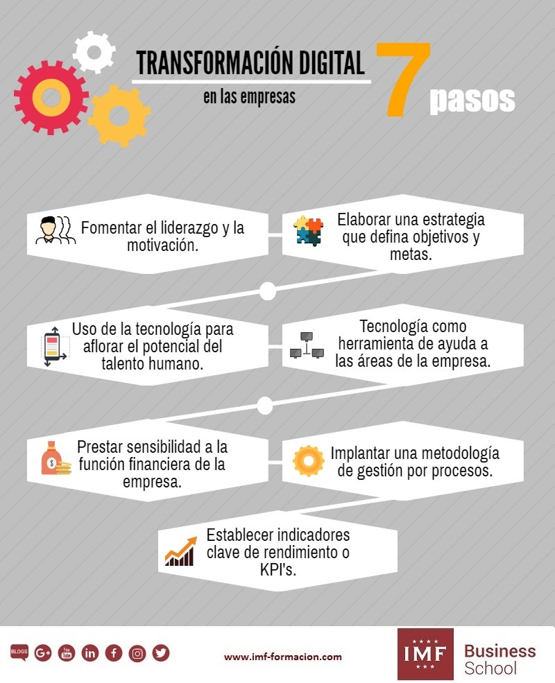

¿Cuáles son las buenas prácticas o hábitos que debemos tener?
Podemos identificar al menos siete hábitos cuya adopción a modo de buenas prácticas puede contribuir a alcanzar la visión de una organización, o dicho de otro modo, a dar soporte a su misión de transformación digital.
